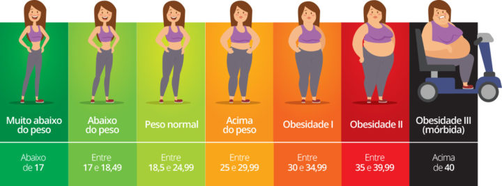

O QUE É IMC?
IMC é a sigla para Índice de Massa Corpórea, parâmetro adotado pela Organização Mundial de Saúde para calcular o peso ideal de cada pessoa.
Apesar de ser o índice mais utilizado, o IMC apresenta algumas falhas. O principal problema é que ele não indica a distribuição da gordura no corpo, um fator primordial para avaliar o sobrepeso. Além desse problema, o IMC não consegue indicar a relação entre massa gorda e magra.
Como é calculado o IMC? O IMC é calculado dividindo o peso (em kg) pela altura ao quadrado (em m), de acordo com a seguinte fórmula: IMC = peso / (altura x altura). O resultado de IMC é dado em kg/m2
VAMOS CALCULAR SEU IMC?
Quantos KG você está pesando?
Qual o sua altura em M²? (Ex: 1.72)
O RESULTADO DO SEU IMC É:
